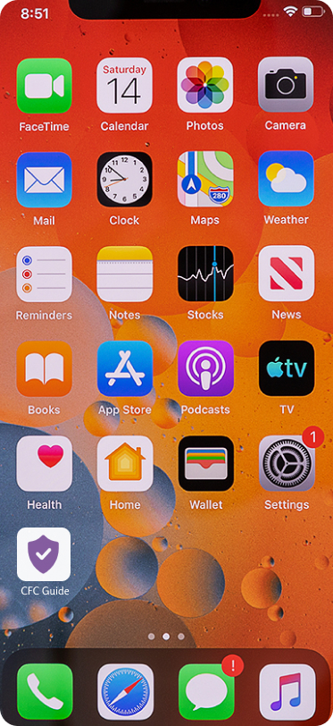
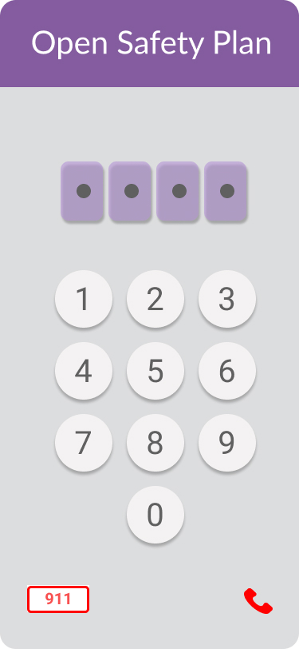
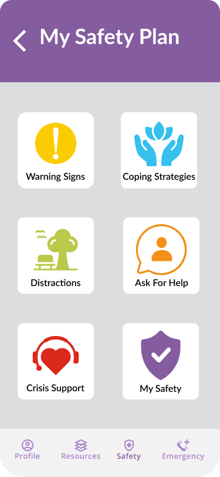
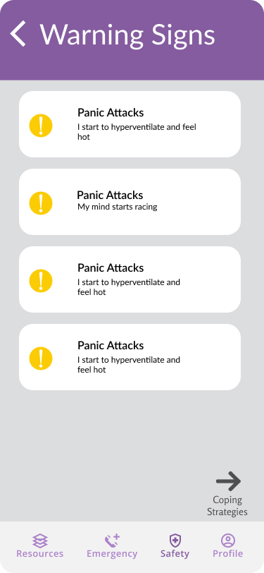
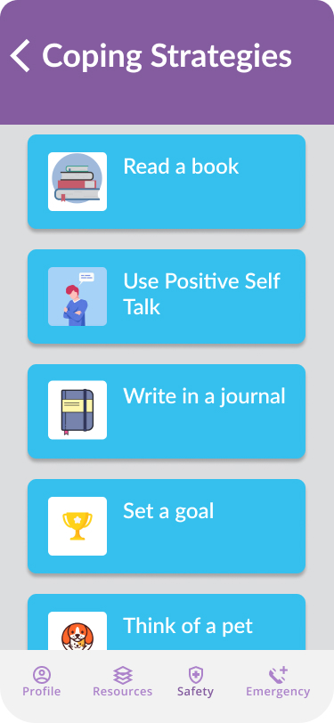
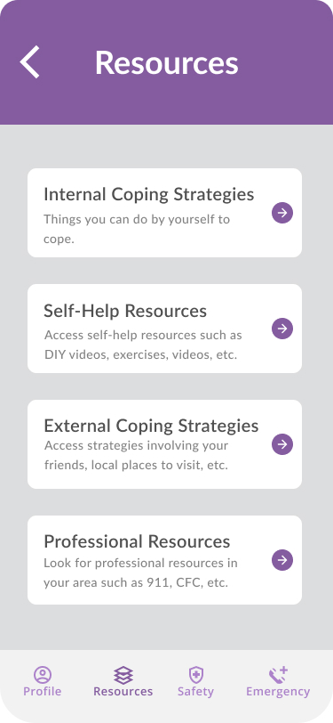
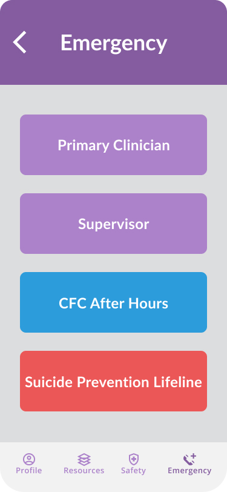
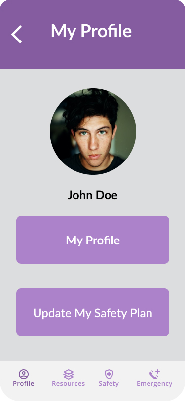

Catholic Family Center - Safety Plan
- Kelvin Ocampo-Diaz
- Roshan Mathew
- Melissa Gould
- Seth Marcus
UX Studio Team 11
Our Steps
Ideation From Safety Plan
Wireframes
Initital Individual
Prototyping
Focus
- Client to prevent loss of paper, clinician would still have access through their medical records
- Color scheme matches with CFC used the website to grab colors and create a palette
- Designed to be users 5+, easy, and simple to use during emergencies
- Icon based so that easier to understand both language and age barriers
- Prevent easy access of editing upon landing page
- Slightly hidden to prevent others from accessing
Prototype
Account creation done with clinician - Set language and create passcode
Bottom Emergency far right for easy access by single handed use
Icons for easy understanding




Easy Access to important contacts
Editing Safety Plan from profile - Prevents accidental editing of safety plan


